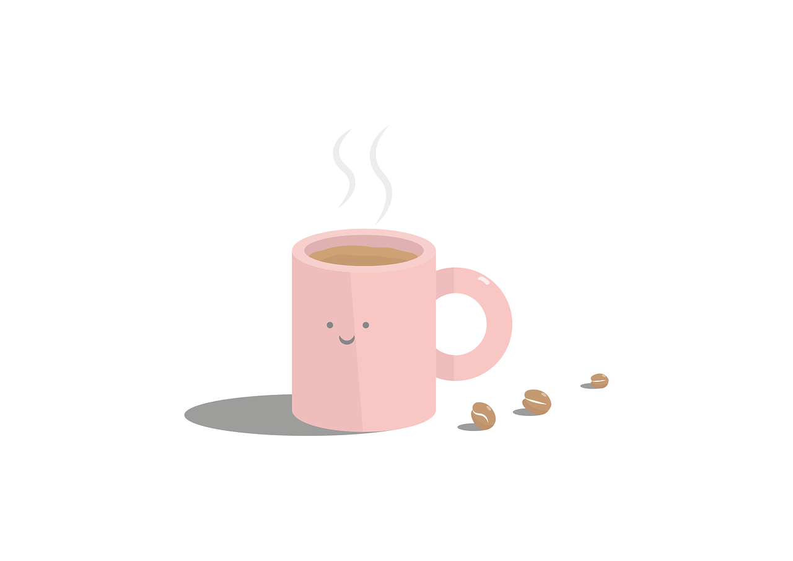

Never (0%)
El adverbio never indica que una acción no ocurre en ningún momento.
Se coloca en la oración para expresar que la frecuencia es cero.
El adverbio never indica que una acción no ocurre en ningún momento.
Se coloca en la oración para expresar que la frecuencia es cero.
| - He never drinks coffee. (Él nunca toma café). |
|
- I never go to school on Sundays. (Nunca voy a la escuela los domingos). |
|
- We never play basketball in class. (Nunca jugamos baloncesto en clase). |

De uso gratuito bajo la Licencia de contenido de Pixabay
Lee cada frase y marca si es verdadera o falsa según el uso de never.
Verdadero
Falso
Falso (porque es contradictorio: si es “cada mañana” no puede ser “nunca”).
Verdadero
Falso
Es para hablar algo que nunca pasa.
Creative Commons Atribución-NoComercial-CompartirIgual (CC BY-NC-SA)